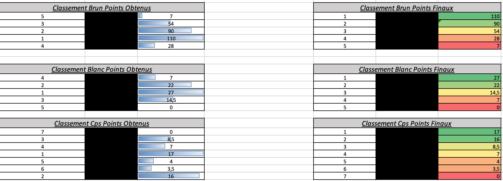
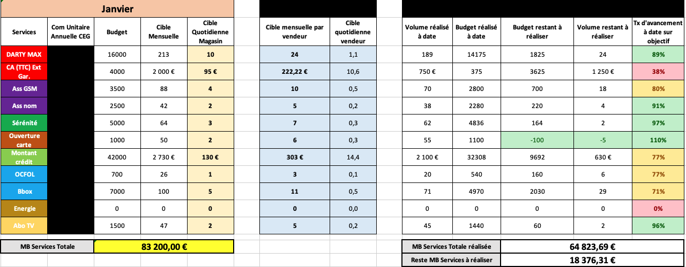

À propos de moi
Après 8 ans d'expérience dans le commerce et la logistique, dont une évolution au poste de responsable pôle services, j'ai développé un fort intérêt pour l'analyse de données. Souhaitant approfondir cette expertise et en faire mon métier, j'ai entrepris une reconversion pour devenir Data Analyst, me formant aux outils et méthodologies de traitement, d’exploration et de visualisation des données.
Mes plus belles réussites durant ces 8 années ont été :
- L'accompagnement et la formation des nouveaux collaborateurs
- La mise en place et le suivi des différents challenges (création de tableau de bord, animations, présentation des résultats).
- Le développement du service après-vente sur le magasin de Darty Montmartre qui nous a permis d'être dans le Top 10 France (sur 412 magasins en 2018).
- Le développement du financement sur Darty Belleville qui nous a permis d'atteindre le Top 100 (sur 423 magasins en 2022).
- Mise en place de la nouvelle organisation de la réserve et de la réception des colis avec l'adressage des colis sur les magasins de Boulogne puis Belleville.
🏃 Running :
Ma passion pour la course m'a permis de réaliser de nombreuses courses comme :
- 🥇 Marathon de Paris (2024)
- 🥈 Semi-marathon de Paris (2024)
- 🥈 Semi-marathon de Lyon (2023)
- 🥈 Semi-marathon de Paris (2023)
- 🥉 10 km Adidas (2023)
💡 Compétences clés développées
- Détermination & persévérance : Atteindre des objectifs ambitieux malgré les obstacles que j'ai rencontré.
- Gestion du stress et de l’effort : Capacité à maintenir la performance.
- Planification & discipline : Suivi d’un plan d’entraînement structuré.
- Esprit de compétition et d’amélioration continue : Toujours chercher à progresser et à optimiser ses performances.
Compétences

Au cours de ma formation, j'ai pu réaliser 9 projets qui m'ont permis de développer des nouvelles compétences :
- 📊 Analyse de données : Exploration et traitement des données pour extraire des insights stratégiques.
- 📈 Outils de visualisation : Power BI, Tableau et Excel pour créer des tableaux de bord dynamiques.
- 💻 Langages de programmation : Python et SQL (SQLiteStudio).
- 🎯 Gestion des KPI : Suivi et reporting des indicateurs de performance pour optimiser les processus.
- 🎨 Visualisation de données : Conception de représentations graphiques claires et percutantes.
Projets

Au cours de ma formation et par passion pour l'analyse de données, j'ai mené plusieurs projets qui m'ont permis d'explorer et de résoudre des problématiques concrètes. À travers l'extraction, la transformation et l'analyse des données, j'ai développé des solutions adaptées, allant de la manipulation avancée à la visualisation via des tableaux de bord interactifs.
Ces projets m'ont permis de :
- Collecter, nettoyer et analyser des jeux de données issus de diverses sources.
- Utiliser Python (pandas, numpy, matplotlib) et SQL pour explorer les données et en extraire des insights pertinents.
- Créer des tableaux de bord interactifs avec Power BI, Tableau et Excel.
- Créer des supports de présentations claires et dynamiques qui permettent de présenter les analyses et les résultats.
Voici quelques exemples de mes projets :
- Création d'un challenge de fin d'année.
- Création d'un fichier pour le pilotage et animation des services du magasin.
- Création d'un support pour effectuer des entretiens mensuels avec mes collaborateurs.
- Création d'un tableau de bord concernant l'Euro 2024 de football.
📌 Challenge de fin d'année
J'ai conçu un challenge de fin d'année permettant de motiver l'ensemble du magasin pour réaliser les différents objectifs que nous avions. 5 équipes ont été crée et un tirage au sort avec la directrice du magasin a été effectué afin de composer les équipes. Le principe est simple, l'équipe qui a le plus de points gagne. Les points sont définis avec les mêmes critères qui définissent le ranking des magasins. Grâce à un tableau de bord interactif, les résultats étaient suivis et mis à jour tous les matins, permettant ainsi au chef d'équipe d'ajuster sa stratégie en fonction des performances.
- Utilisation d'Excel pour structurer les données et créer un dashboard.
- Utilisation de RECHERCHEV pour alimenter le tableau de bord et de RANG pour le classement
- Analyse des performances des équipes.
- Présentation des résultats sous forme de classement pour plus de clarté.

🚨 Par souci de confidentialité, les noms des salariés et des responsables ont été masqués.
📌 Pilotage et animation des services du magasin
Création d'un fichier Excel dynamique pour le suivi de l'ensemble des services (assurances, financements, abonnements...). Ce fichier a permis une meilleure visibilité et un pilotage plus efficace des performances du magasin. Il nous permettait en un coup d'oeil de voir la marge générée à date et ce qu'il reste à faire pour atteindre les différents objectifs.

🚨 Par souci de confidentialité, les noms des services ont été masqués.
📌 Outil de suivi des entretiens mensuels
Mise en place d'un support permettant de structurer et formaliser les entretiens mensuels de mes collaborateurs, facilitant le suivi des performances et des objectifs. Le document était imprimé en deux exemplaires : un exemplaire archivé dans un classeur et l'autre exemplaire remis au collaborateur concerné.

📌 Création d'un tableau de bord : Euro 2024
L'objectif était de créer un tableau de bord qui permettait d'avoir l'ensemble des statistiques par équipe et de pouvoir les comparer entre elles.
J'ai procédé de la manière suivante :
Collecte des données : Extraction du jeu de données depuis Kaggle.
Nettoyage et préparation : Analyse, correction et mise à jour des données pour assurer leur fiabilité.
Structuration de l'information : Conception des tableaux dynamiques selon les journées de matchs.
Visualisation et analyse : Création d’un tableau de bord offrant une vue claire et détaillée des performances.
Ce projet m'a permis de renforcer mes compétences en manipulation de données ainsi qu'en visualisation avancée (Excel).

Contact
Si vous souhaitez en savoir plus :
- 📧 Email : benedy.jeanphilippe@icloud.com
- 📞 Téléphone : +33 6 65 51 59 53
- 📍Adresse : Paris, FRANCE